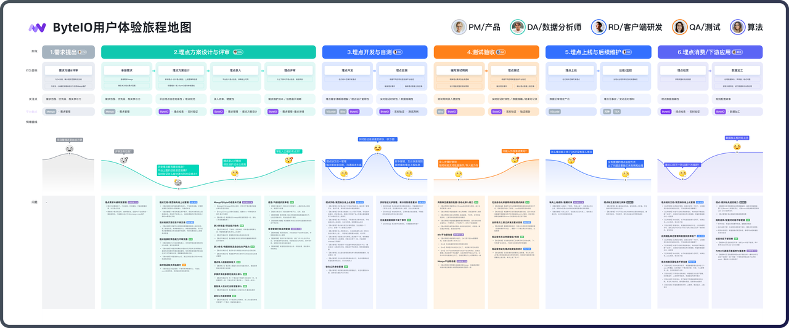

理解角色与场景
覆盖分析、研发、测试与算法等角色，建立完整的埋点协作视角。
USER RESEARCH
调研不仅要收集问题，也要建立对业务全貌的理解，并把发现连接到可以推进的产品机会。这个项目为后续的埋点设计与需求管理优化提供了研究基础。

ByteIO 首次开展平台级用户摸底，需要深入了解不同角色在埋点工作中的任务、协作方式与使用痛点，并系统梳理平台体验现状。
覆盖分析、研发、测试与算法等角色，建立完整的埋点协作视角。
沿真实任务路径归纳痛点，识别效率、理解和信息获取方面的问题。
将用户诉求与产品规划连接，推动关键机会点进入后续优化。
访谈覆盖多个业务场景的 11 位用户，包含数据分析、研发、测试与算法角色，从日常任务中识别差异化诉求。
梳理从需求、方案设计到开发与验证的协作路径，把零散反馈放回具体阶段与角色中理解。
独立产出研究报告，并与产品逐项对齐问题与机会，推动公共参数管理、埋点设计与需求线上化等方向。
研究收集的痛点问题
被产品采纳的问题
采纳表示问题进入产品关注或后续规划，不代表全部已开发上线。部分机会点的进一步落地体现在 ByteIO 埋点方案设计体验优化案例中。
查看 ByteIO 埋点体验优化方案 ↗研究的价值在于建立全局认知并推动后续行动。除产品推荐的受访者外，后续也可以结合使用数据扩大招募来源，减少对已知问题的重复确认。